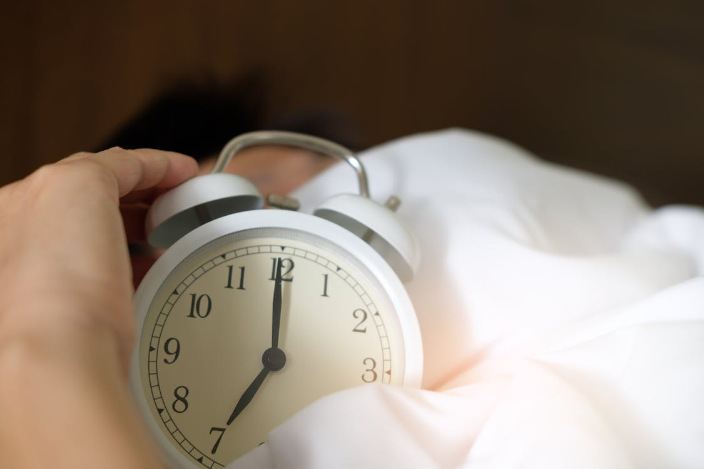

Protocolo de sueño
Oct 23, 2023 | A. Huberman
Aquí está mi lista sobre cómo mejorar el sueño:
1) Ver la luz del sol saliendo entre 30 y 60 minutos después de despertarse. Haga esto nuevamente al final de la tarde, antes del atardecer.
Si te despiertas antes de que salga el sol y quieres estar despierto, enciende las luces artificiales y luego sal una vez que salga el sol.
En días luminosos y sin nubes: vea el sol de la mañana y de la tarde durante 10 min; días nublados: 20 min; días muy nublados 30-60 min. Si vive en un lugar con muy poca luz, considere una fuente artificial de simulación diurna.
No use gafas de sol para esta práctica si puede hacerlo de forma segura, pero las lentes de contacto y los anteojos están bien.
No, no es necesario mirar directamente al sol y nunca mirar NINGUNA luz tan brillante que sea dolorosa de ver. Dicho esto, no puedes usar sombrero de ala, gafas de sol y permanecer en la sombra y esperar "despertar" tu reloj circadiano.
2) Despiértate a la misma hora todos los días y vete a dormir cuando empieces a sentir sueño.
Superar la sensación de sueño nocturno y acostarse demasiado tarde (para usted) es una de las razones por las que las personas se despiertan a las 3 a.m. y no pueden volver a dormirse.
3) Evite la cafeína entre 8 y 10 horas antes de acostarse.
El Dr. Matt Walker (experto en sueño de UC Berkeley) podría incluso decir entre 12 y 14 horas. Tomo bien la cafeína a las 2 p. m. y me voy a dormir entre las 10 y las 11 p. m. El Dr. Walker estuvo en el Podcast del Laboratorio Huberman y discutimos esto en detalle.
4) Si tiene alteraciones del sueño, insomnio o ansiedad por dormir, pruebe los protocolos respaldados por investigaciones en la aplicación Reveri (para iPhone).
Realice la autohipnosis del sueño de Reveri 3 veces por semana a cualquier hora del día. Solo dura entre 10 y 15 minutos y te ayudará a reconfigurar tu sistema nervioso para poder relajarte más rápido.
5) Evite ver luces brillantes, especialmente luces brillantes del techo entre las 10 p.m. y las 4 a.m.
He aquí una regla sencilla: utilice únicamente la iluminación artificial necesaria para permanecer y moverse con seguridad durante la noche. Los bloqueadores azules pueden ayudar un poco por la noche pero aún así atenuar las luces. Ver luces brillantes de todos los colores es un problema para su sistema circadiano. La luz de las velas y la luz de la luna están bien. (Los trabajadores por turnos deberían ver el Huberman Lab Podcast sobre el desfase horario para compensar los efectos negativos del trabajo por turnos. Lo mismo para los viajeros con desfase horario).
6) Limite las siestas diurnas a menos de 90 minutos o no tome ninguna siesta.
Me encantan las siestas, como a muchos de mis colegas. Tiendo a tomar siestas de 30 minutos la mayoría de las tardes... tal vez 45 minutos, pero nunca más.
7) Si te despiertas en medio de la noche (lo cual, por cierto, es normal que lo haga una vez cada noche) pero no puedes volver a dormirte, considera hacer un protocolo NSDR cuando te despiertes.
Ingrese "NSDR" en YouTube y las 3 o 4 opciones principales tendrán diferentes voces y duraciones para que usted seleccione. O simplemente haga un protocolo de “Yoga Nidra” (ingrese “yoga nidra” en YouTube; cientos para seleccionar).
8) Espere sentirse realmente alerta ~1 hora antes de su hora natural de acostarse. Se trata de un aumento natural en la vigilia que han observado los investigadores del sueño.
No te asustes si sucede. ¡Pasara!
9) Mantenga la habitación donde duerme fresca y oscura y colóquele mantas que pueda quitar.
Su cuerpo necesita bajar la temperatura entre 1 y 3 grados para conciliar el sueño y permanecer dormido de manera efectiva. Los aumentos de temperatura corporal son una de las razones por las que te despiertas. Por lo tanto, mantenga su habitación fresca y retire las mantas según sea necesario. Si hace demasiado calor, tendrías que usar un dispositivo de enfriamiento y eso es más difícil que simplemente tirar las mantas si hace demasiado calor.
10) Beber alcohol arruina tu sueño. Como lo hacen la mayoría de los medicamentos para dormir.
Esto se discutió en el episodio del podcast del laboratorio Huberman con el Dr. Matt Walker.
11) Los niños (y de hecho todos nosotros) tienen necesidades de sueño cambiantes con el tiempo. Ajustar en consecuencia.
Puede que seamos noctámbulos a los 15 años, pero nos convertimos en “personas mañaneras” a medida que envejecemos o necesitamos 6 horas por noche en verano y 7-8 en invierno. Variará.
Eso es todo por ahora. Una vez más, el sueño es LA base de nuestra salud física y mental y de nuestro rendimiento en todos los esfuerzos. Sin embargo, nadie es perfecto en cuanto al sueño. Salir ocasionalmente por la noche o perderse la luz del sol aquí y allá no es gran cosa, así que no te obsesiones con eso. Sin embargo, si alguno de nosotros se aleja de estos y otros comportamientos durante demasiado tiempo, comenzamos a sufrir. Entonces, cualquiera que sea tu vida, tus objetivos y tu horario, domina tu sueño. ¡Estarás tan feliz de haberlo hecho!
Gracias por leer
Encuentra mas información en el post original del Dr. Andrew Huberman
CONTINUA LEYENDO